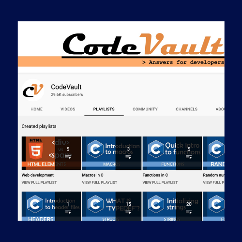
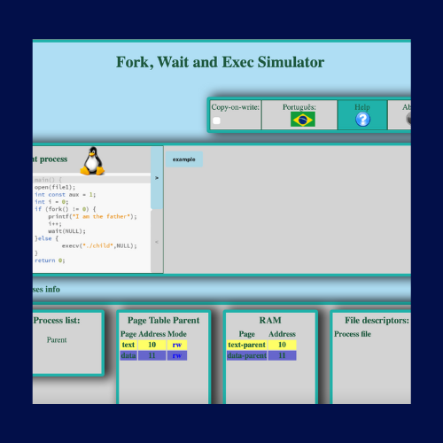

About fork() in C
Animated Examples
More Resources
More Resources
linuxhint.com
section.io

Code Vault's Youtube Video
Linux Manual Page
Geeks for Geeks
tutorialspoint.com

Fork Simulator
linuxhint.com: writing your first fork() program
includehelp.com
made with
by a former cs3157 student